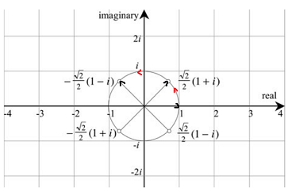
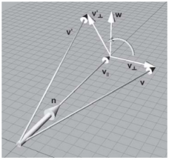
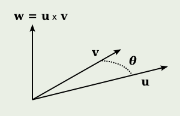

四元数的引入
一切都要从数系的扩充开始。人们最开始使用数字，是从正整数开始，也就是1,2,3……。因为它符合人们的思维习惯，简单，容易理解。0这个我们看似理所当然的数字，也是中世纪以后才引入的。后来又引入了负数、分数、无理数。但这些数字都没有跳出实数轴，是一维的。在当时人们的观念里$x^2\ge0$，但随着实践的进一步加深，在解方程的过程中发现了$x^2=-1$这么一个怪物。起初人们不理解，认为这样的根是不存在的。后来，为了使计算过程能够继续下去，有数学家引入字母$i$来表示这样的数，也就是现在称之为的虚数。$i$是英文单词imaginary的首字母，意思是虚构的、假想的。就这样数系进一步扩充到了虚数。
但问题是，实数轴上没有虚数的位置。很多数学家都在努力寻找虚数的位置和意义。后来发现如果将虚数轴垂直于实数轴，就可以将数系推广到二维平面，用于处理二维空间的量。数学表示为$a+bi$，称之为复数。后来发现非常好使。像我们初中学力学的时候用向量来处理力的分解问题，其实这事儿完全可以用复数来解决。除此以外，复数还有一个绝技，那就是用来处理二维向量的旋转。复数$a+bi$不是$2＋3$意义上的一个真正的和，加号的使用是历史的偶然，而$bi$不能加到$a$上去。复数$a+bi$只不过是实数的有序数对$(a,b)$。感觉是不是和向量很像。下面举例说明复数是如何进行向量旋转的。
设一个向量为$(0,1)$，用复数表示为$1+0*i$，将其逆时针旋转45°。只需将其乘以$\frac{\sqrt{2}}{2}(1+i)$即可，如下图：

将向量$(\frac{\sqrt{2}}{2},\frac{\sqrt{2}}{2})$逆时针旋转90°。首先构造复数$\frac{\sqrt{2}}{2}(1+i)$，然后将其乘以$i$，如下：
$$
\frac{\sqrt{2}}{2}(1+i)*i=-\frac{\sqrt{2}}{2}(1-i)
$$
见上图，得到$(\frac{\sqrt{2}}{2},\frac{\sqrt{2}}{2})$旋转90°后的向量$(-\frac{\sqrt{2}}{2},\frac{\sqrt{2}}{2})$。
既然复数处理向量这么好使，那么三维空间存不存在对应的数？这就是当初很多数学家寻找四元数的原因。后来哈密尔顿（Hamilton）胜出，成了四元数的发现者。为了纪念他，四元数集用$\mathbf{H}$表示。
四元数定义
由一个实部和三个虚部组成，如下：
$$
q = s +xi +yj +zk\ \ \ \ \ s,x,y,z ∈ R
$$
其中，
$$
i^2 = j^2 = k^2 = ijk = −1\\
ij = k, jk = i, ki = j\\
ji = −k, kj = −i, ik = −j
$$
令
$$
\mathbf{v}=xi+yj+zk
$$
四元数可以被表示为，
$$
q=[s,\mathbf{v}]\ \ \ \ s,x,y,z\in{R}
$$
旋转三维向量
绕任意轴的旋转公式
向量$\mathbf{v}$绕旋转轴$\mathbf{n}$旋转$\theta$后至$\mathbf{v}’$。如下图：

其中：
1、向量$\mathbf{v}=\mathbf{v}_\parallel+\mathbf{v}_\perp$。其中$\mathbf{v}_\parallel$平行于旋转轴$\mathbf{n}$，$\mathbf{v}_\perp$垂直于旋转轴$\mathbf{n}$。
2、$\mathbf{v}’_\perp$为$\mathbf{v}_\perp$旋转$\theta$后的向量，二者长度相等。
3、$\mathbf{w}=\mathbf{n}\times\mathbf{v}_\perp$。
我们的目的是用$\mathbf{v}$、$\mathbf{n}$、$\theta$来表示$\mathbf{v}’$。先找出各个量之间的关系:
1、$\mathbf{v}_\parallel$为$\mathbf{v}$在$\mathbf{n}$上的投影，所以有：
$$
\mathbf{v}_\parallel=(\mathbf{n}\cdot\mathbf{v})\mathbf{n}
$$
2、$\mathbf{v}_\perp$
$$
\begin{align}
\mathbf{v}_\perp&=\mathbf{v}-\mathbf{v}_\parallel\\
&=\mathbf{v}-(\mathbf{n}\cdot\mathbf{v})\mathbf{n}\\
\end{align}
$$
3、$\mathbf{w}$
$$
\begin{align}
\mathbf{w}&=\mathbf{n}\times\mathbf{v}_\perp\\
&=\mathbf{n}\times(\mathbf{v}-(\mathbf{n}\cdot\mathbf{v})\mathbf{n})\\
&=\mathbf{n}\times\mathbf{v}
\end{align}
$$
4、$\mathbf{v}’_\perp$
此处$\theta\gt{90°}$，若$\theta\lt{90°}$更好理解。
$$
\begin{align}
\mathbf{v}’_\perp&=\cos\theta\mathbf{v}_\perp+\sin\theta\mathbf{w}\\
&=\cos\theta(\mathbf{v}-(\mathbf{n}\cdot\mathbf{v})\mathbf{n})+\sin\theta(\mathbf{n}\times\mathbf{v})\\
\end{align}
$$
从而有：
$$
\begin{align}
\mathbf{v}’&=\mathbf{v}_\perp+\mathbf{v}_\parallel\\
&=\cos\theta(\mathbf{v}-(\mathbf{n}\cdot\mathbf{v})\mathbf{n})+\sin\theta(\mathbf{n}\times\mathbf{v})+(\mathbf{n}\cdot\mathbf{v})\mathbf{n}
\end{align}
$$
四元数旋转
设被旋转向量为$p$，构造纯四元数如下：
$$
p=[0,\mathbf{p}]
$$
设单位模长（只做旋转变换）四元数为：
$$
q=[s,\lambda\mathbf{\hat{v}}]
$$
其中$s^2+\lambda^2=1$。
其逆：
$$
q^{-1}=[s,-\lambda\mathbf{\hat{v}}]
$$
进行旋转运算：
$$
qpq^{-1}=[0,2\lambda^2(\mathbf{\hat{v}}\cdot\mathbf{p})\mathbf{\hat{v}}+(s^2-\lambda^2)\mathbf{p}+2\lambda{s}\mathbf{\hat{v}}\times\mathbf{p}]
$$
设$s=\cos\frac{1}{2}\theta$、$\lambda=\sin\frac{1}{2}\theta$，即四元数$q=\left[\cos\frac{1}{2}\theta,\sin\frac{1}{2}\theta\mathbf{\hat{v}}\right]$，上式变为：
$$
qpq^{-1}=[0,(1-\cos\theta)(\mathbf{\hat{v}}\cdot\mathbf{p})\mathbf{\hat{v}}+\cos\theta\mathbf{p}+\sin\theta\mathbf{\hat{v}}\times\mathbf{p}]
$$
由绕任意轴的旋转公式有：
$$
\begin{align}
\mathbf{v}’&=\mathbf{v}_\perp+\mathbf{v}_\parallel\\
&=\cos\theta(\mathbf{v}-(\mathbf{n}\cdot\mathbf{v})\mathbf{n})+\sin\theta(\mathbf{n}\times\mathbf{v})+(\mathbf{n}\cdot\mathbf{v})\mathbf{n}
\end{align}
$$
用$\mathbf{n}$代替$\mathbf{\hat{v}}$，$\mathbf{v}$代替$\mathbf{p}$，有：
$$
\begin{align}
qpq^{-1}&=[0,(1-\cos\theta)(\mathbf{\hat{v}}\cdot\mathbf{p})\mathbf{\hat{v}}+\cos\theta\mathbf{p}+\sin\theta\mathbf{\hat{v}}\times\mathbf{p}]\\
&=[0,\cos\theta(\mathbf{v}-(\mathbf{n}\cdot\mathbf{v})\mathbf{n})+\sin\theta(\mathbf{n}\times\mathbf{v})+(\mathbf{n}\cdot\mathbf{v}])\mathbf{n}
\end{align}
$$
故，可以用四元数$q$，通过$qpq^{-1}$运算，将纯四元数$p$中向量$\mathbf{p}$绕$q$中$\mathbf{\hat{v}}$轴旋转$\theta$°。
四元数构造
目的
设两个向量$\vec{u}=[u_x,u_y,u_z]$、$\vec{v}=[v_x,v_y,v_z]$，如下图：

如何构造四元数$q$，使得$\vec{u}$旋转至与$\vec{v}$重合？
分析
为了达到这一目的，需要解决连个问题，一个是旋转轴，即围绕着谁转的问题。一个是旋转角度，即旋转多少的问题。有了旋转轴和旋转角度，就可以构造四元数。为了方便处理，取垂直于$\vec{u}$和$\vec{v}$的向量$\vec{w}$为旋转轴，旋转角度为$\theta$，如上图。所需四元数为：
$$q=\left[\cos\frac{1}{2}\theta,\sin\frac{1}{2}\theta\vec{w}\right]$$
于是问题转化为如何通过向量$\vec{u}$和$\vec{v}$表示$\vec{w}$和$\theta$。
实现
由叉乘的性质可知，两个向量的叉乘，结果仍为向量，且与二者垂直。由此，可以求取旋转轴如下：
$$\vec{w}=\vec{u}\times\vec{v}=\left[(u_y\cdot{v_z}-u_z\cdot{v_y}), (u_z\cdot{v_x}-u_x\cdot{v_z}), (u_x\cdot{v_y}-u_y\times{v_x})\right]$$
由向量的点乘，
$$\vec{u}\cdot\vec{v}=u_x\cdot{v_x}+u_y\cdot{v_y}+u_z\cdot{v_z}=|\vec{u}||\vec{v}|\cos\theta$$
可得，
$$\cos\theta=\frac{u_x\cdot{v_x}+u_y\cdot{v_y}+u_z\cdot{v_z}}{|\vec{u}||\vec{v}|}$$
由三角函数的半角公式，
$$\sin\frac{1}{2}\theta=\sqrt\frac{1-\cos\theta}{2}$$
$$\cos\frac{1}{2}\theta=\sqrt\frac{1+\cos\theta}{2}$$
从而四元数求出所需四元数为：
$$
\begin{align}
q&=\left[\cos\frac{1}{2}\theta,\sin\frac{1}{2}\theta\vec{w}\right]\\
&=\left[\sqrt\frac{1+\cos\theta}{2},\sqrt\frac{1-\cos\theta}{2}\\
\left((u_y\cdot{v_z}-u_z\cdot{v_y})i+ (u_z\cdot{v_x}-u_x\cdot{v_z})j+(u_x\cdot{v_y}-u_y\times{v_x})k\right)\right]\\
&=\left[\sqrt\frac{1+\frac{u_x\cdot{v_x}+u_y\cdot{v_y}+u_z\cdot{v_z}}{|\vec{u}||\vec{v}|}}{2},\sqrt\frac{1-\frac{u_x\cdot{v_x}+u_y\cdot{v_y}+u_z\cdot{v_z}}{|\vec{u}||\vec{v}|}}{2}\\\
((u_y\cdot{v_z}-u_z\cdot{v_y})i+ (u_z\cdot{v_x}-u_x\cdot{v_z})j+(u_x\cdot{v_y}-u_y\times{v_x})k)\right]\\
\end{align}
$$
这即为我们需要的结果。但实在是太繁杂了，下面看看能不能化简。
化简
实际上，虽然上式为我们要求的四元数，但并不满足我们旋转的要求。旋转要求四元数的模为单位长。而上式不一定能满足要求。为了使四元数的模为单位长，可以将$\vec{w}$归一化以后再用来构造四元数。设$\vec{w}$归一化后的结果为$\vec{w}’$,则：
$$\vec{w}’=\vec{w}\cdot\frac{1}{|\vec{w}|}$$
其中，
$$|\vec{w}|=|\vec{u}||\vec{v}|\sin\theta$$
重新构造四元数如下：
$$
\begin{align}
q&=\left[\cos\frac{\theta}{2},\sin\frac{\theta}{2}\vec{w}’\right]\\
&=\left[\cos\frac{\theta}{2},\sin\frac{\theta}{2}\frac{1}{|\vec{u}||\vec{v}|\sin\theta}\vec{w}\right]\\
&=\left[\cos\frac{\theta}{2},\sin\frac{\theta}{2}\frac{1}{|\vec{u}||\vec{v}|2\sin\frac{\theta}{2}\cos\frac{\theta}{2}}\vec{w}\right]\\
&=\left[\cos\frac{\theta}{2},\frac{1}{|\vec{u}||\vec{v}|2\cos\frac{\theta}{2}}\vec{w}\right]\\
\end{align}
$$
四元数乘以一个标量，不改变四元数的旋转特性，故可设$q’=(|\vec{u}||\vec{v}|2\cos\frac{\theta}{2})q$，有：
$$
\begin{align}
q’&=(|\vec{u}||\vec{v}|2\cos\frac{\theta}{2})q\\
&=\left[|\vec{u}||\vec{v}|2\cos\frac{\theta}{2}\cos\frac{\theta}{2},\vec{w}\right]\\
&=\left[|\vec{u}||\vec{v}|(1+\cos\theta),\vec{w}\right]\\
&=\left[|\vec{u}||\vec{v}|+|\vec{u}||\vec{v}|\cos\theta),\vec{w}\right]\\
&=\left[|\vec{u}||\vec{v}|+\vec{u}\cdot\vec{v}),\vec{w}\right]\\
\end{align}
$$
将$q’$进行标准化处理后即可用于旋转$\vec{u}$、$\vec{v}$，使二者重合。
参考
Beautiful maths simplification: quaternion from two vectors
Finding the Quaternion Betwee Two Vectors
Finding quaternion representing the rotation from one vector to another